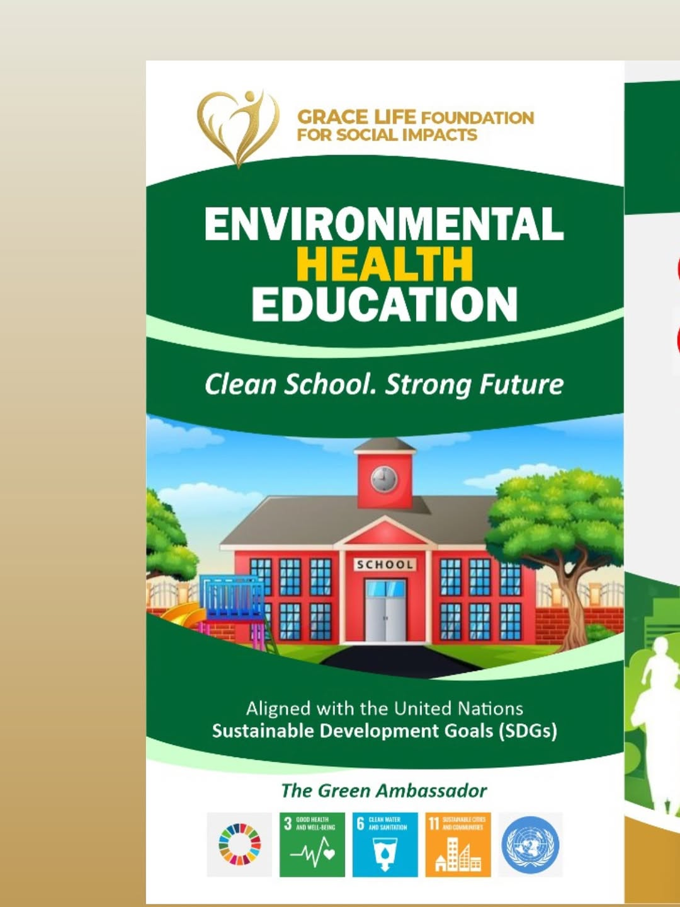
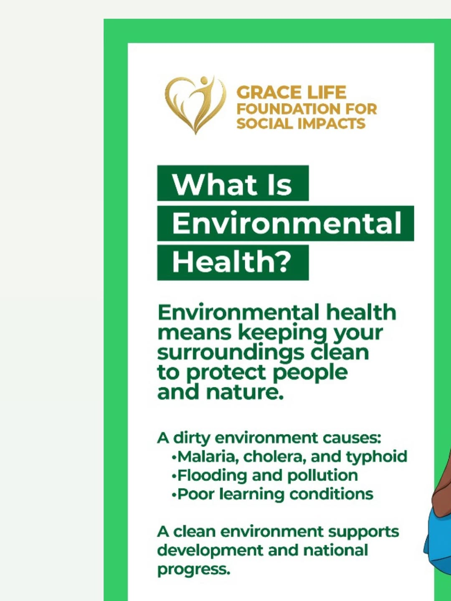
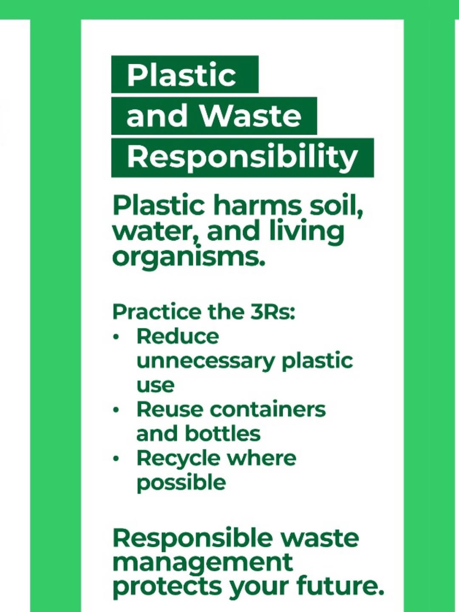
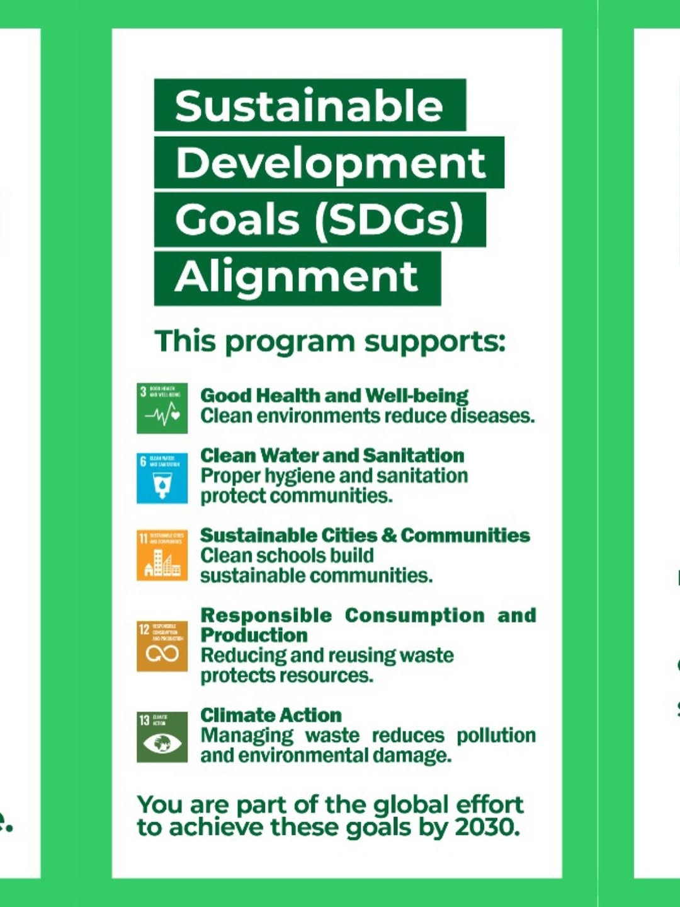

Cleaner Environment, Safer Health, Stronger Communities
Make a Difference TodayGrace Life Foundation For Social Impacts is a registered non-profit dedicated to providing humanitarian aid and health support to vulnerable communities. We address urgent medical needs, promote community development, support educational initiatives, and engage in environmental programs to improve living conditions.
Our goal is to lift people out of difficult situations through practical, targeted help. We work with hospitals, local groups, and donors to deliver real impact.
At Grace Life Foundation for Social Impacts, we believe every child deserves a clean and healthy classroom. Our team visited Queen Elizabeth Girls School to discuss how keeping our surroundings clean goes beyond managing waste. it protects health, reduces disease, and creates a safe space where students can learn and thrive. A cleaner environment is a lasting gift to the next generation. DONATE HERE.




Proud to share our latest initiative.
Our Environmental Health Education program is designed to empower Green Ambassadors
to take responsibility for their surroundings.
By focusing on waste management and the 3Rs, we are directly contributing to:
Support for urgent surgeries and critical health needs
Food and welfare support for low-income families
Outreach in Communities
Education support and community awareness programs
We run projects that address the core struggles people face every day. This includes medical assistance, social relief, youth support, and community education. We track results and publish clear updates so supporters see where every contribution goes.
You can help someone get treatment, food support, or access to education. Your contribution creates real change.
Your donation helps us continue empowering communities and changing lives
Account Name: Grace Life Foundation for social impacts
Account Number: 0076252821
Account Name: Grace Life Foundation for social impacts
Account Number: 0076252814
Account Name: Grace Life Foundation for social impacts
Account Number: 3010003384
We'd love to hear from you and explore ways to collaborate
gracelifefoundationnn@gmail.com
Nigeria